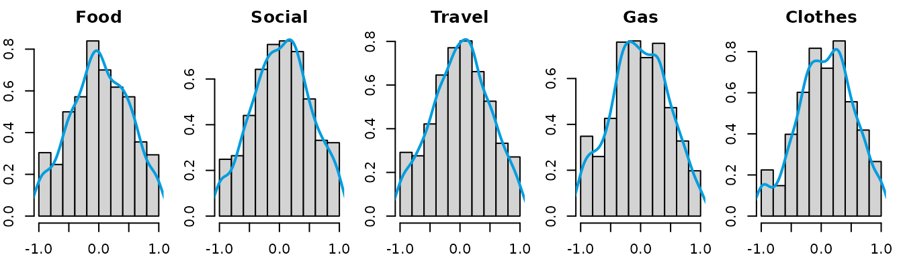
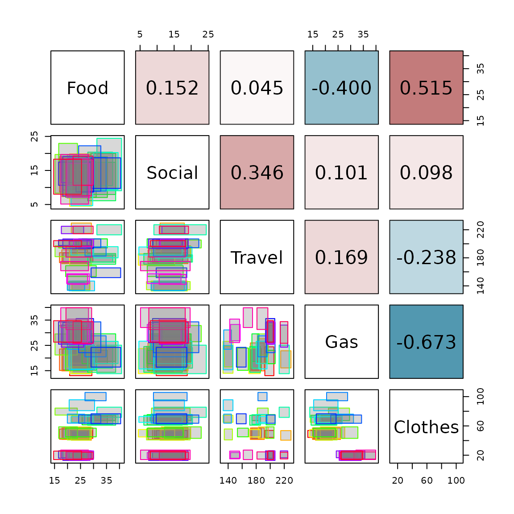

Class `intData` examples
Catarina P. Loureiro
Source:vignettes/intData_examples.Rmd
intData_examples.RmdThis vignette provides examples of how to use the
intData class and related functions for handling
interval-valued data. The intData class is designed to
represent interval-valued data. The examples included here demonstrate
how to create intData objects, compute summary statistics,
and visualize interval-valued data using the
SYMB.pairs.panels function. The dataset used in these
examples is the Credit Card dataset, which is available in the
package and can be loaded using data("creditcard"). The
examples illustrate the basic functionalities of the
intData class and how to work with interval-valued data in
R.
For more details on the interval-valued data framework implemented in the package, please refer to Oliveira et al. (2025).
Credit Card Dataset
This dataset contains interval data of credit card expenses (Billard and Diday (2006)), including min-max values, centers and ranges, centers and logranges, and microdata. The aggregation of the microdata was done by person-month, resulting in observations. It is composed of variables:
- Food
- Social
- Travel
- Gas
- Clothes
The creditcard dataset includes the following
components:
-
microdata: A data frame with rows and columns. It contains the microdata, with individual measurements of each variable for all observations. -
min_max: A data frame with rows and columns. Each row corresponds to a different interval observation, and each column gives the minimum and maximum values for each variable. -
centers_ranges: A data frame with rows and columns. Each row corresponds to the centers and ranges of the interval data. -
centers_logranges: A data frame with rows and columns. Each row corresponds to the centers and logranges of the interval data.
data(creditcard)
CreditCard_microdata <- creditcard$microdata
CreditCard_min_max <- creditcard$min_max
CreditCard_CR <- creditcard$centers_rangesThere are different ways to create an intData object
from the dataset, depending on the assumptions about the latent
distribution of the microdata. In this example, we will create an
intData object using the min_max component of
the dataset, assuming a continuous uniform distribution for the latent
variables, which corresponds to the symmetric and i.d. case with
.
This is the default setting for the intData class.
credit_card_int_unif <- intData(CreditCard_min_max, Seq = "LbUb_VarbyVar",
VarNames = colnames(CreditCard_microdata)[3:7])
# Check the parameters of the latent distribution
credit_card_int_unif@LatentParam
#> [[1]]
#> [1] 0.08333333Since the microdata are available, we can take a closer look at the
distribution of the latent variables. The get_latent_var
function can be used to obtain the latent variables observed values, by
standardizing the microdata into the
interval. In this example, we will use the min_max
component of the dataset to standardize the microdata. The aggregation
criterion is by month and name, so we will create a new variable that
combines the name and month to use as the grouping variable for the
standardization process. We can then visualize the distribution of the
latent variables using histograms and density plots.
credit_agrby <- factor(paste(CreditCard_microdata$Name,CreditCard_microdata$Month, sep = "_"))
credit_card_U <- get_latent_var(CreditCard_microdata[,3:7], CreditCard_min_max, credit_agrby,
rownames(CreditCard_min_max), Seq = "LbUb_VarbyVar")
oldpar <- par(no.readonly = TRUE)
par(mfrow=c(1,5), mar=c(2, 2, 2, 1))
for (i in 1:5){
hist(credit_card_U[,i], xlab = NULL, ylab = NULL,
main = colnames(credit_card_U)[i], probability = TRUE)
lines(density(credit_card_U[,i], na.rm = TRUE), col = '#009de0', lwd = 2)
}
par(oldpar)After examining the distribution of the latent variables, we can
assume the distributions are approximately triangular and symmetric.
Then, we can create an intData object using the
min_max component of the dataset, specifying the latent
distribution as “Triang”.
credit_card_int_triang <- intData(CreditCard_min_max, Seq = "LbUb_VarbyVar", LatentDist = "Triang",
VarNames = colnames(CreditCard_microdata)[3:7])
# Check the parameters of the latent distribution
credit_card_int_triang@LatentParam
#> [[1]]
#> [1] 0.04166667
head(credit_card_int_triang)
#> Food Social Travel Gas Clothes
#> 1_1 [ 20.81 , 29.38 ] [ 9.74 , 18.86 ] [ 192.33 , 205.23 ] [ 13.01 , 24.42 ] [ 44.28 , 53.82 ]
#> 1_2 [ 21.44 , 29.18 ] [ 10.86 , 18.01 ] [ 214.98 , 229.63 ] [ 16.08 , 22.86 ] [ 40.51 , 53.57 ]
#> 1_3 [ 20.78 , 29.09 ] [ 11.19 , 19.87 ] [ 183.12 , 197.17 ] [ 17.96 , 27.65 ] [ 42.97 , 58.62 ]
#> 1_4 [ 20.82 , 29.18 ] [ 4.48 , 15.15 ] [ 169.49 , 185.75 ] [ 13.83 , 23.73 ] [ 44.93 , 55.08 ]
#> 1_5 [ 21.72 , 28.48 ] [ 8.24 , 18.88 ] [ 132.71 , 146.96 ] [ 13.97 , 26.59 ] [ 64.96 , 74.60 ]
#> 1_6 [ 19.90 , 28.63 ] [ 6.88 , 19.71 ] [ 134.48 , 146.11 ] [ 16.50 , 24.64 ] [ 40.91 , 55.80 ]The intData object contains the centers and ranges of
the interval data, as well as the parameters of the latent distribution.
The centers and ranges can be accessed using the @Centers
and @Ranges slots, respectively, while the lower and upper
bounds can be obtained using the LowerBounds and
UpperBounds functions.
credit_card_int_triang@Centers[1:5,]
#> Food.Centers Social.Centers Travel.Centers Gas.Centers Clothes.Centers
#> 1_1 25.095 14.300 198.780 18.715 49.050
#> 1_2 25.310 14.435 222.305 19.470 47.040
#> 1_3 24.935 15.530 190.145 22.805 50.795
#> 1_4 25.000 9.815 177.620 18.780 50.005
#> 1_5 25.100 13.560 139.835 20.280 69.780
credit_card_int_triang@Ranges[1:5,]
#> Food.Ranges Social.Ranges Travel.Ranges Gas.Ranges Clothes.Ranges
#> 1_1 8.57 9.12 12.90 11.41 9.54
#> 1_2 7.74 7.15 14.65 6.78 13.06
#> 1_3 8.31 8.68 14.05 9.69 15.65
#> 1_4 8.36 10.67 16.26 9.90 10.15
#> 1_5 6.76 10.64 14.25 12.62 9.64
LowerBounds(credit_card_int_triang)[1:5,]
#> Food.Lbnd Social.Lbnd Travel.Lbnd Gas.Lbnd Clothes.Lbnd
#> 1_1 20.81 9.74 192.33 13.01 44.28
#> 1_2 21.44 10.86 214.98 16.08 40.51
#> 1_3 20.78 11.19 183.12 17.96 42.97
#> 1_4 20.82 4.48 169.49 13.83 44.93
#> 1_5 21.72 8.24 132.71 13.97 64.96
UpperBounds(credit_card_int_triang)[1:5,]
#> Food.Ubnd Social.Ubnd Travel.Ubnd Gas.Ubnd Clothes.Ubnd
#> 1_1 29.38 18.86 205.23 24.42 53.82
#> 1_2 29.18 18.01 229.63 22.86 53.57
#> 1_3 29.09 19.87 197.17 27.65 58.62
#> 1_4 29.18 15.15 185.75 23.73 55.08
#> 1_5 28.48 18.88 146.96 26.59 74.60Alternatively, we can create an intData object using the
centers_ranges component of the dataset, which contains the
centers and ranges of the interval data. As for the latent variables’
parameters, since we have the microdata available, another option is to
estimate the parameters directly based on the microdata by setting
LatentCase = "General" and LatentDist = "KDE"
to use a kernel density estimation for the latent distribution. In this
case, it is necessary to specify the Umicro argument, which
contains the standardized microdata values.
credit_card_int_KDE <- intData(CreditCard_CR, Seq = "LbUb_VarbyVar",
VarNames = colnames(CreditCard_microdata)[3:7],
LatentCase = "General", LatentDist = "KDE", Umicro = credit_card_U)
# Check the parameters of the latent distribution
credit_card_int_KDE@LatentParam
#> [[1]]
#> [,1] [,2] [,3] [,4] [,5]
#> [1,] 0.2385710 0.2266593 0.2234636 0.2237180 0.2198639
#> [2,] 0.2266593 0.2336648 0.2210776 0.2208769 0.2183596
#> [3,] 0.2234636 0.2210776 0.2277094 0.2183420 0.2143626
#> [4,] 0.2237180 0.2208769 0.2183420 0.2293551 0.2129321
#> [5,] 0.2198639 0.2183596 0.2143626 0.2129321 0.2220598
#>
#> [[2]]
#> [,1] [,2] [,3] [,4] [,5]
#> [1,] 0.01970377 0.0000000 0.0000000 0.00000000 0.00000000
#> [2,] 0.00000000 0.0353448 0.0000000 0.00000000 0.00000000
#> [3,] 0.00000000 0.0000000 0.0151136 0.00000000 0.00000000
#> [4,] 0.00000000 0.0000000 0.0000000 -0.01665365 0.00000000
#> [5,] 0.00000000 0.0000000 0.0000000 0.00000000 0.07370565In the majority of the cases, the macrodata has to be constructed
from the microdata. The micro2intData function can be used
to create an intData object from the microdata, by
aggregating the microdata according to a specified criterion. In this
example, we will aggregate the microdata by month and name, using the
same grouping variable created earlier. We will also specify the latent
distribution as “General” to estimate the parameters based on the
microdata. If the LatentCase argument is omitted, it
assumes the latent distribution is uniform (i.d. and symmetric), which
is the default setting for the intData class. It is also
possible to specify the latent distribution, as seen in the previous
examples.
credit_card_int_agr <- micro2intData(CreditCard_microdata[,3:7], credit_agrby, LatentCase = "General")
# Check the parameters of the latent distribution
credit_card_int_agr@LatentParam
#> [[1]]
#> [,1] [,2] [,3] [,4] [,5]
#> [1,] 0.2385710 0.2266593 0.2234636 0.2237180 0.2198639
#> [2,] 0.2266593 0.2336648 0.2210776 0.2208769 0.2183596
#> [3,] 0.2234636 0.2210776 0.2277094 0.2183420 0.2143626
#> [4,] 0.2237180 0.2208769 0.2183420 0.2293551 0.2129321
#> [5,] 0.2198639 0.2183596 0.2143626 0.2129321 0.2220598
#>
#> [[2]]
#> [,1] [,2] [,3] [,4] [,5]
#> [1,] 0.01970377 0.0000000 0.0000000 0.00000000 0.00000000
#> [2,] 0.00000000 0.0353448 0.0000000 0.00000000 0.00000000
#> [3,] 0.00000000 0.0000000 0.0151136 0.00000000 0.00000000
#> [4,] 0.00000000 0.0000000 0.0000000 -0.01665365 0.00000000
#> [5,] 0.00000000 0.0000000 0.0000000 0.00000000 0.07370565
head(credit_card_int_agr)
#> Food Social Travel Gas Clothes
#> 1_1 [ 20.81 , 29.38 ] [ 9.74 , 18.86 ] [ 192.33 , 205.23 ] [ 13.01 , 24.42 ] [ 44.28 , 53.82 ]
#> 1_10 [ 18.24 , 29.75 ] [ 9.24 , 17.57 ] [ 173.76 , 187.12 ] [ 15.25 , 23.75 ] [ 43.05 , 57.34 ]
#> 1_11 [ 16.91 , 28.85 ] [ 8.65 , 19.03 ] [ 173.12 , 187.30 ] [ 15.09 , 23.54 ] [ 41.85 , 55.70 ]
#> 1_12 [ 17.80 , 27.67 ] [ 7.33 , 19.06 ] [ 171.71 , 191.47 ] [ 14.91 , 25.97 ] [ 41.54 , 57.18 ]
#> 1_2 [ 21.44 , 29.18 ] [ 10.86 , 18.01 ] [ 214.98 , 229.63 ] [ 16.08 , 22.86 ] [ 40.51 , 53.57 ]
#> 1_3 [ 20.78 , 29.09 ] [ 11.19 , 19.87 ] [ 183.12 , 197.17 ] [ 17.96 , 27.65 ] [ 42.97 , 58.62 ]Now that we have created the intData object, we can, for
instance, compute the symbolic covariance and correlation matrices of
the interval data using the int_cov function.
credit_card_cov <- int_cov(credit_card_int_agr)
credit_card_cor <- cov2cor(credit_card_cov)
# Check the covariance matrix
credit_card_cov
#> Food Social Travel Gas Clothes
#> Food 19.311563 1.0362555 4.753931 -9.3001616 54.408201
#> Social 1.036255 2.3969207 12.755943 0.8241657 3.661854
#> Travel 4.753931 12.7559432 567.525646 21.2722637 -136.381036
#> Gas -9.300162 0.8241657 21.272264 28.0447659 -85.604729
#> Clothes 54.408201 3.6618540 -136.381036 -85.6047285 576.922703Finally, we can visualize the interval data using the
SYMB.pairs.panels function, which creates a pairs plot for
interval-valued data. The lower triangular shows scatter plots of the
variables, while the upper triangular shows the interval correlation
matrix.
SYMB.pairs.panels(credit_card_int_agr, type = "rectangles",
corr = credit_card_cor, labels = colnames(credit_card_int_agr))